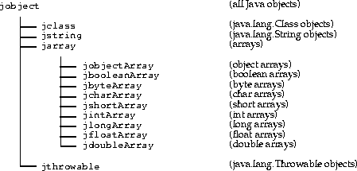

| Contents | Prev | Next | Java Native Interface Specification |
This chapter discusses how the JNI maps Java types to native C types.
The following definition is provided for convenience.
#define JNI_FALSE 0
#define JNI_TRUE 1
The jsize integer type is used to describe cardinal indices and sizes:
typedef jint jsize;

typedef jobject jclass;In C++, JNI introduces a set of dummy classes to enforce the subtyping relationship. For example:
class _jobject {};
class _jclass : public _jobject {};
...
typedef _jobject *jobject;
typedef _jclass *jclass;
struct _jfieldID; /* opaque structure */
typedef struct _jfieldID *jfieldID; /* field IDs */
struct _jmethodID; /* opaque structure */
typedef struct _jmethodID *jmethodID; /* method IDs */
jvalue union type is used as the element type in argument arrays. It is
declared as follows:
typedef union jvalue {
jboolean z;
jbyte b;
jchar c;
jshort s;
jint i;
jlong j;
jfloat f;
jdouble d;
jobject l;
} jvalue;
long f (int n, String s, int[] arr);has the following type signature:
(ILjava/lang/String;[I)J
\u0001 to \u007F are
represented by a single byte, as follows:
The seven bits of data in the byte give the value of the character that is
represented. The null character (\u000) and characters in the range \u0080
to \u07FF are represented by a pair of bytes, x and y, as follows:
The bytes represent the character with the value ((x&0x1f)<<6)+(y&0x3f).
Characters in the range \u0800 to \uFFFF are represented by three bytes, x, y,
and z:
The character with the value ((x&0xf)<<12)+(y&0x3f)<<6)+(z&0x3f) is
represented by the three bytes.
There are two differences between this format and the "standard" UTF-8
format. First, the null byte (byte)0 is encoded using the two-byte format
rather than the one-byte format. This means that Java VM UTF-8 strings never
have embedded nulls. Second, only the one-byte, two-byte, and three-byte
formats are used. The Java VM does not recognize the longer UTF-8 formats.
Java Native Interface Specification (HTML generated by dkramer on March 15, 1997)
Copyright © 1996, 1997 Sun Microsystems, Inc.
All rights reserved
Please send any comments or corrections to jni@java.sun.com